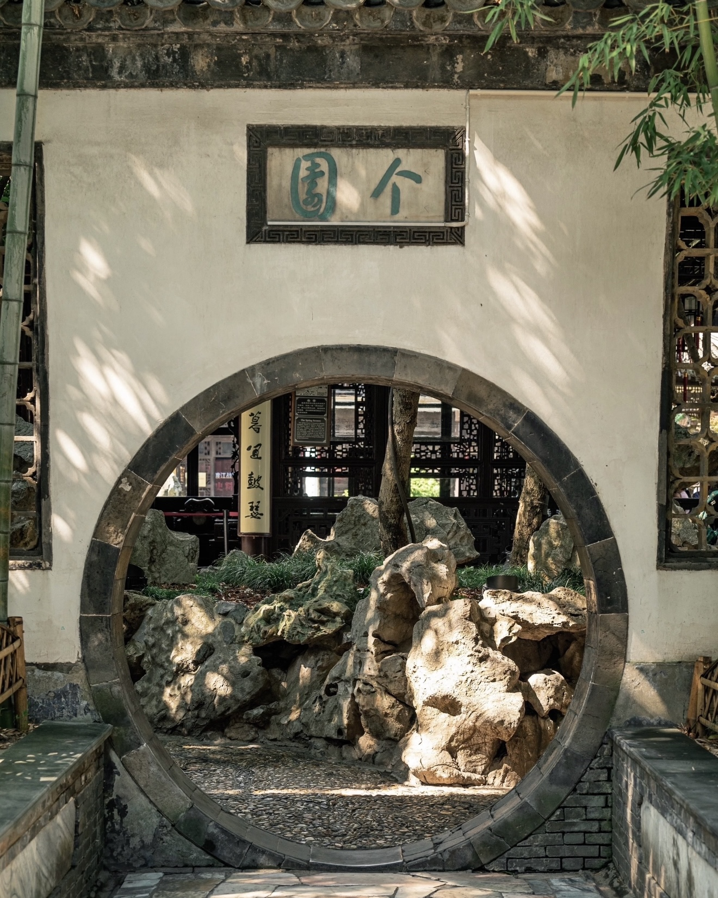

"烟花三月下扬州" - 探索这座千年古城的美景
请选择一个景点投票，查看大家的偏好
已收到 0 份投票
国家5A级旅游景区，清代康乾时期形成的湖上园林群，窈窕曲折的湖道串以长堤春柳、四桥烟雨、徐园、小金山、五亭桥、白塔、二十四桥等景点，俨然一幅天然秀美的国画长卷。

中国四大名园之一，以遍植青竹而名，以春夏秋冬四季假山而胜。由两淮盐业商总黄至筠于清嘉庆23年（公元1818年）在原明代"寿芝园"的基础上拓建为住宅园林。
又名"寄啸山庄"，被誉为"晚清第一园"，面积1.4万余平方米。何园由清光绪年间何芷舠所造，片石山房系石涛大师叠山作品，建筑中西合璧，复道回廊堪称一绝。
因初建于南朝宋孝武帝大明年间（457-464年）而得名。唐代鉴真法师曾在此住持，后东渡日本。寺内建有九层的栖灵塔，塔高70米，可俯瞰扬州全景。
扬州最具代表性的历史老街，东至古运河边，西至国庆路，全长1122米。街面上市井繁华、商家林立，行当俱全，陆陈行、油米坊、鲜鱼行、八鲜行等近百家之多。
京杭大运河中最古老的一段，扬州境内运河与2000多年前的古邗沟路线大部分吻合。古运河扬州城区段从瓜洲至湾头全长约30公里，构成著名的"扬州三湾"。